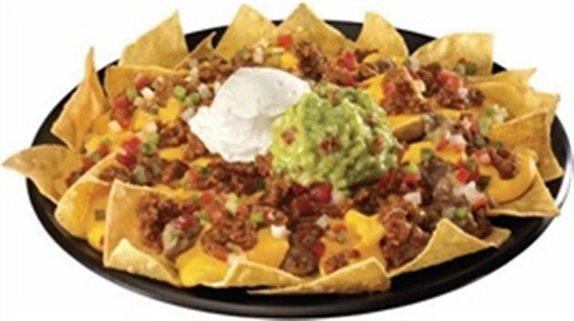

Nachos

Description
Nachos have no type of complexity and have a nice taste when cooked correctly!
Ingredients:
- Tostadas para Nachos
- Queso Amarillo y Queso Fresco
- Meat (Fajita)
- Pico de Gallo
- Guacamole
Steps:
- Cook your meat/fajita well.
- Have your queso amarillo hot and ready.
- Perpare your pico de gallo and guacamole.
- Pour some nachos on to a plate.
- Pour some queso amarillo and queso fresco.
- Add your fajita on top of it.
- Top it all of with some pico de gallo and some guacamole.
- Enjoy!